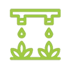

सिंचाई सहायक
जो ड्रिप सिंचाई और उर्वरीकरण को 24/7/365 मॉनिटर करता है
स्मार्ट वॉटरिंग एक क्लाउड-कनेक्टेड हार्डवेयर है जो आपके बाग़ में सिंचाई और उर्वरीकरण को स्वचालित करता है।
समय, पैसा, उर्वरक और पानी बचाता है
क्योंकि आप पूरे सिंचाई और उर्वरीकरण प्रणाली को मोबाइल ऐप के माध्यम से दूर से नियंत्रित करते हैं।

आपको समय पर निर्णय लेने में मदद करता है
वास्तविक समय डेटा और विश्लेषण के लिए धन्यवाद

सर्वोत्तम उपज सुनिश्चित करता है
क्योंकि पौधों को हमेशा आवश्यक मात्रा में पानी और उर्वरक मिलता है - न अधिक, न कम
आज ही अपनी सिंचाई और उर्वरीकरण को ऑटो-पायलट पर रखें और अपने कृषि व्यवसाय को और अधिक विकसित करने के लिए समय और पैसा बचाएं